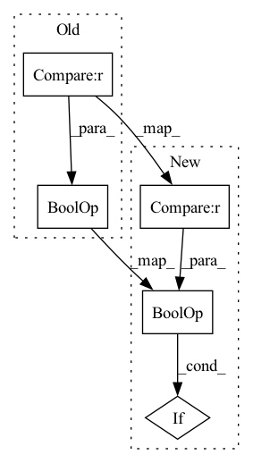

Pattern ID :2399
Before Change
"{}/logits_fake".format(split): logits_fake.detach().mean()
}
if self.training and disc_factor and global_step % 16 == 0 :
gradients, = torch.autograd.grad(outputs=logits_real.sum(), inputs=inputs, create_graph=True)
gradients = gradients.view(inputs.shape[0], -1)
After Change
if optimizer_idx == 1:
// second pass for discriminator update
disc_factor = 1 if global_step >= self.discriminator_iter_start else 0
do_r1 = self.training and bool(disc_factor) and global_step % 16 == 0
logits_real = self.discriminator(inputs.detach().requires_grad_(do_r1))
logits_fake = self.discriminator(reconstructions.detach())
d_loss = disc_factor * self.disc_loss(logits_fake, logits_real)
if do_r1:
gradients, = torch.autograd.grad(outputs=logits_real.sum(), inputs=inputs, create_graph=True)
gradients = gradients.view(inputs.shape[0], -1)
gradients_norm = gradients.norm(2, dim=1).pow(2).mean()
d_loss += 10 * gradients_norm/2
log = {"{}/disc_loss".format(split): d_loss.detach(),
"{}/logits_real".format(split): logits_real.detach().mean(),
"{}/logits_fake".format(split): logits_fake.detach().mean()
}
if do_r1:
log["{}/r1_reg".format(split)] = gradients_norm.detach()
return d_loss, log
In pattern: SUPERPATTERN
Frequency: 4
Non-data size: 5
Instances Fragment ID: 8078959
Project Name: thuangb/enhancing-transformers
Commit Name: 2d20f168741dde3d04f60b3fb3f9256f7827ef2e
Time: 2022-06-14
Author: 87744278+thuangb@users.noreply.github.com
File Name: enhancing/losses/vqperceptual.py
M Class Name: VQLPIPSWithDiscriminator
N Class Name: VQLPIPSWithDiscriminator
M Method Name: forward(8)
N Method Name: forward(8)
M Parent Class: nn.Module
N Parent Class: nn.Module
M File Name: enhancing/losses/vqperceptual.py
N File Name: enhancing/losses/vqperceptual.py
M Start Line: 103
M End Line: 168
N Start Line: 103
N End Line: 168
Before Change
if residual is None:
residual = x
if self.input_size == 1 and self.hidden_size == 1 :
return residual
x = self.fc1(x)After Change
if residual is None:
residual = x
if self.input_size == 1 and self.hidden_size == 1:
x = torch.zeros_like(residual, device=residual.device)
x = self.add_norm(x, residual)
return x
else: Fragment ID: 8078958
Project Name: jdb78/pytorch-forecasting
Commit Name: b86eaa01b49a5108df9780b9dded33086a9dda80
Time: 2020-08-07
Author: beitner.jan@bcg.com
File Name: pytorch_forecasting/models/temporal_fusion_transformer/sub_modules.py
M Class Name: GatedResidualNetwork
N Class Name: GatedResidualNetwork
M Method Name: forward(4)
N Method Name: forward(4)
M Parent Class: nn.Module
N Parent Class: nn.Module
M File Name: pytorch_forecasting/models/temporal_fusion_transformer/sub_modules.py
N File Name: pytorch_forecasting/models/temporal_fusion_transformer/sub_modules.py
M Start Line: 139
M End Line: 154
N Start Line: 159
N End Line: 176
Before Change
if self.cal_f != 0 and self.cal is not None:
lsnr_gt = self.lsnr(clean, noise=noisy - clean, max_bin=self.nb_df)
cal = self.cal(df_alpha, target_lsnr=lsnr_gt)
if self.store_losses and self.istft is not None :
enhanced_td = self.istft(enhanced)
clean_td = self.istft(clean)
self.store_summaries(enhanced_td, clean_td, snrs, ml, sl, cal)After Change
if self.cal_f != 0 and self.cal is not None:
lsnr_gt = self.lsnr(clean, noise=noisy - clean, max_bin=self.nb_df)
cal = self.cal(df_alpha, target_lsnr=lsnr_gt)
if self.store_losses and self.istft is not None:
self.store_summaries(enhanced_td, clean_td, snrs, ml, sl, cal) // type: ignore
return ml + sl + cal
def reset_summaries(self): Fragment ID: 8078963
Project Name: rikorose/deepfilternet
Commit Name: 767f713efb53582ac5d91ab365e5ef0f2be57c22
Time: 2022-01-14
Author: h.schroeter@pm.me
File Name: DeepFilterNet/df/loss.py
M Class Name: Loss
N Class Name: Loss
M Method Name: forward(9)
N Method Name: forward(9)
M Parent Class: nn.Module
N Parent Class: nn.Module
M File Name: DeepFilterNet/df/loss.py
N File Name: DeepFilterNet/df/loss.py
M Start Line: 378
M End Line: 382
N Start Line: 447
N End Line: 466
Before Change
// TODO line 482 in albef/models/xbert.py
// compatibility for ALBEF and BLIP
if mode in ["multimodal", "fusion"] and hasattr(self, "crossattention") :
assert (
encoder_hidden_states is not None
), "encoder_hidden_states must be given for cross-attention layers"After Change
// TODO line 482 in albef/models/xbert.py
// compatibility for ALBEF and BLIP
if mode in ["multimodal", "fusion"] and hasattr(self, "crossattention"):
assert (
encoder_hidden_states is not None
), "encoder_hidden_states must be given for cross-attention layers"
Fragment ID: 8078962
Project Name: salesforce/lavis
Commit Name: 8e1fe6000035bca09d390796e5be6893908dff8b
Time: 2022-05-30
Author: dongxu_li@outlook.com
File Name: lavis/models/med.py
M Class Name: BertLayer
N Class Name: BertLayer
M Method Name: forward(9)
N Method Name: forward(9)
M Parent Class: nn.Module
N Parent Class: nn.Module
M File Name: lavis/models/med.py
N File Name: lavis/models/med.py
M Start Line: 435
M End Line: 452
N Start Line: 428
N End Line: 471